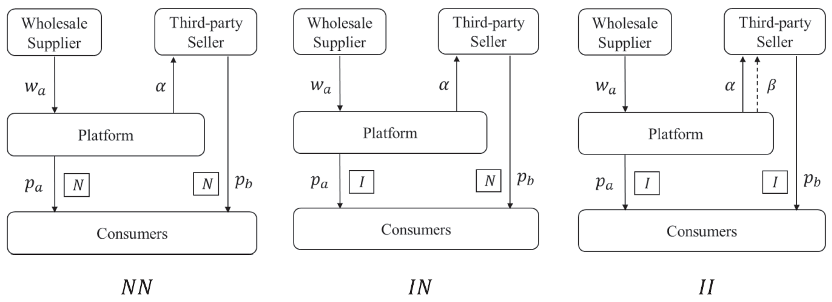

Research Details¶
Market Setting¶
The model considers a hybrid e-commerce market consisting of a wholesale supplier, a platform, a third-party seller, and a continuum of consumers. The platform purchases product A from the wholesale supplier and resells it to consumers, while the third-party seller sells a substitute product B directly through the platform.
The seller pays the platform a commission rate \(\alpha\). If the platform shares its consumer credit service with the seller, the seller also pays an additional service-fee rate \(\beta\). Consumer credit increases consumers' willingness to pay, but the platform bears losses associated with non-repayment.
Operational Modes¶

Figure 1. No credit service (NN), exclusive provision by the platform (IN), and service sharing with the third-party seller (II).
| Mode | Platform's product A | Seller's product B |
|---|---|---|
| NN | No consumer credit service | No consumer credit service |
| IN | Consumer credit service provided | No consumer credit service |
| II | Consumer credit service provided | Consumer credit service shared |
Model Notation¶
For compact presentation, the notation is arranged in paired columns. The superscript \(k\in\{NN,IN,II\}\) denotes the operational mode, and the subscript \(i\in\{W,T,P\}\) denotes the wholesale supplier, third-party seller, and platform.
| Symbol | Meaning | Symbol | Meaning |
|---|---|---|---|
| \(v\) | Consumer valuation of product A | \(\lambda\) | Product differentiation between A and B |
| \(p_a^k\) | Retail price of product A | \(p_b^k\) | Retail price of product B |
| \(w_a^k\) | Wholesale price of product A | \(D_a^k,D_b^k\) | Demands for products A and B |
| \(\alpha\) | Platform commission rate | \(\beta\) | Credit-service fee charged to the seller |
| \(\gamma\) | Consumer preference for the credit service | \(\theta\) | Consumer repayment rate |
| \(\pi_i^k\) | Profit of market participant \(i\) | \(CS^k\) | Consumer surplus |
| \(\delta\) | Share of consumers willing to use credit | \(1-\delta\) | Share of conservative consumers in the extension |
The base model assumes \(v\sim U[0,1]\), \(0<\lambda<1\), \(0<\alpha<1/5\), \(0<\beta<1/10\), and \(1/2<\theta<1\).
Consumer Utilities and Demands¶
NN Mode¶
Neither channel offers consumer credit:
IN Mode¶
Only the platform's product offers consumer credit:
II Mode¶
Both products offer the platform's consumer credit service:
Profit Functions¶
NN Mode¶
IN Mode¶
II Mode¶
Solution Method¶
The game is solved by backward induction:
- The wholesale supplier chooses the wholesale price \(w_a^k\).
- The platform and third-party seller simultaneously choose retail prices \(p_a^k\) and \(p_b^k\).
- Consumers choose product A, product B, or no purchase.
- Equilibrium prices, demands, profits, and consumer surplus are derived for each mode.
- The equilibrium outcomes are compared to determine the platform's provision and sharing strategies.
The analysis combines analytical equilibrium derivation, comparative statics, and Mathematica-based numerical simulations.